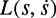
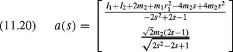

|
| |||||||||||||
|
|
||
Given a collision-free path q(s) for a robot system, what is the fastest feasible trajectory that follows this path? In other words, what is the time-optimal time scaling s(t) subject to actuator constraints? This question is of considerable importance for maximizing the productivity of robot systems when a path has been given by task specifications or found by a path planner. This problem has been solved elegantly by Shin and McKay [385] and Bobrow, Dubowsky, and Gibson [51], with subsequent enhancements by Pfeiffer and Johanni [348], Slotine and Yang [388], and Shiller and Lu [384].
Let us assume that the equations of motion of our system are in the standard form of equation (10.7) or equation (10.10) from chapter 10. The robot is subject to the actuator limits
In general, the actuator limits may be functions of the system configuration and velocity. For example, the torque available to accelerate a DC motor decreases as its angular velocity increases. The simplest example of actuator limits are the symmetric, state-independent bounds
For a given path q(s), we can substitute
| (11.3) |
|
into equation (10.10) to get
| (11.4) | 
|
or
| (11.5) |
|
These equations can be expressed compactly as the vector equation
| (11.6) |
|
defining the dynamics constrained to the path q(s). The vector functions a(s), b(s), and c(s) are inertial, velocity product, and gravitational terms in terms of s, respectively.
As the robot travels along the path q(s), its state at any time is identified by . Actuator limits can be expressed as a function of the path state by substituting equation (11.2) into equation (11.1), yielding and . Therefore, at all times the system must satisfy the constraints
Let and be the minimum and maximum accelerations satisfying the ith component of equation (11.7), and define
Then if ai (s) > 0, and , if ai(s) < 0. (If ai(s) = 0 for any i, the system is at a zero inertia point, and we will set aside this possibility until subsection 11.2.1.) We define
The actuator limits (11.7) can then be expressed as
The problem can now be stated:
Given a path , an initial state , and a final state , , find a monotonically increasing twice-differentiable time scaling s : [0, tf ] → [0, 1] that (1) satisfies , and (2) minimizes the total travel time tf along the path while respecting the actuator constraints (11.9) for all time t ∊ [0, tf ].
We can conveniently visualize this problem in the state space. At any state , the constraints (11.9) specify a range of feasible accelerations along the path, . This range can be interpreted as a cone of tangent vectors in the state space, as illustrated in figure 11.1. The problem is to find a curve from to such that everywhere and the tangent at each state is inside the cone at that state. Further, the curve should maximize the speed at each s to minimize the time of motion. A consequence of this is that the curve always follows the upper or lower bound of the cone (maximum or minimum acceleration) at each state.[1] This kind of trajectory is called a "bang-bang" trajectory, and at least one of the actuators is always saturated. The heart of the time-scaling problem is to find the switching points between maximum and minimum acceleration.
At some states , the actuation constraints (11.9) indicate that there is no feasible acceleration that will allow the system to continue to follow the path. Such regions of the state space are shown in gray in figure 11.1. We will call these regions inadmissible regions. At any inadmissible state, the robot is doomed to leave the path immediately. At admissible states, the robot may still be doomed to eventually leave the path. This happens if any integral curve originating from the state, with tangents remaining inside the tangent cones, eventually must reach the inadmissible region (figure 11.2).
We will assume that, for any s, the robot is strong enough to maintain its configuration statically, so all states are admissible and the path can be executed arbitrarily slowly. We will also assume that as increases from zero for a given s, there will be at most one switch from admissible to inadmissible. This occurs at the velocity limit curve ν(s), consisting of states satisfying
The velocity limit ν(s) is obtained by equating for all and solving each equation for (if a solution exists). Call the solution .[2]
For all i, j, keep the minimum value:
Note that because of the max(·) and min(·) functions used in calculating , and ν(s), these functions are generally not smooth.
As mentioned earlier, the problem is to find the switches between maximum and minimum acceleration. The following algorithm uses numerical integration to find the set of switches, expressed as the s values at which the switches occur.
Initialize an empty list of switches and a switch counter i = 0. Set
Integrate the equation backward in time from until the velocity limit curve is penetrated (reached transversally, not tangentially), s = 0, or at s < 1. There is no solution to the problem if is reached. Otherwise, call this phase plane curve F and proceed to the next step.
Integrate the equation forward in time from . Call this curve Ai. Continue integrating until either Ai crosses F or Ai penetrates the velocity limit curve. (If Ai crosses s = 1 or before either of these two cases occurs, there is no solution to the problem.) If Ai crosses F, then increment i, let si be the s value at which the crossing occurs, and append si to the list of switches  . The problem is solved and is the solution. If instead the velocity limit curve is penetrated, let
. The problem is solved and is the solution. If instead the velocity limit curve is penetrated, let  be the point of penetration and proceed to the next step.
be the point of penetration and proceed to the next step.
Search the velocity limit curve ν(s) forward in s from until finding the first point where the feasible acceleration (L = U on the velocity limit curve) is tangent to the velocity limit curve. If the velocity limit is ν(s), then a point (s0, ν(s0)) satisfies the tangency condition if . Call the first tangent point reached .[3] From (stan, stan), integrate the curve backward in time until it intersects Ai. Increment i and call this new curve Ai. Let si be the s value of the intersection point. This is a switch point from maximum to minimum acceleration. Append si to the list .
Increment i and set . This is a switch point from minimum to maximum acceleration. Append si to the list  . Goto step 3.
. Goto step 3.
An illustration of the time-scaling algorithm is shown in figure 11.3.
Until now, we have been making the assumption that each ai(s) in (11.8) is always nonzero. In this usual case, the velocity limit occurs when . If ai(s) = 0, however, the force at the ith actuator is independent of , and therefore the ith actuator defines no acceleration constraints . Instead, it defines directly a velocity constraint using (11.7):
In the case of a zero inertia point where k of the ai (s) are zero, let be the maximum velocity satisfying all k constraints (11.11), and let . Then is the true velocity limit curve, generalizing the curve ν(s) by allowing for the possibility of zero inertia points.
If a point on the velocity limit curve is determined by a zero inertia point velocity constraint, then at this point. This point is called a critical point. If, in addition, either integrated forward from this point, or  integrated backward from this point, would result in immediate penetration of the velocity limit curve, then the point is called singular (figure 11.4).
At a singular point , let
be the acceleration defined by the tangent to the velocity limit curve. If the velocity limit curve is not differentiable at the singular point (as is often the case), then define
to be the right and left limits, respectively. Then, to prevent penetration of the velocity limit curve, the maximum feasible acceleration at is
Similarly, the minimum feasible acceleration is
This is shown graphically in figure 11.5.
Critical points occur on a lower-dimensional subset of the robot's configuration space where M(q) is not full rank. If the path passes through this subset transversally, the path will have isolated critical points. If the path travels along this lower-dimensional subset, however, we may have a continuous critical arc of critical points. Similarly, we may have singular arcs.
We can now modify the time-scaling algorithm to properly account for zero inertia points. At singular points, we integrate and instead of and , respectively. This will also allow the algorithm to "slide" along singular arcs using an acceleration between and  , instead of switching rapidly back and forth between them. In step 4, we search the velocity limit curve for any critical or tangent point, not just tangent points.
, instead of switching rapidly back and forth between them. In step 4, we search the velocity limit curve for any critical or tangent point, not just tangent points.
Consider the two-joint RP robot arm with the dynamics derived in chapter 10. We have planned a path to follow the straight line shown in figure 11.6, and we wish to find the time-optimal time scaling of the path. Let x = [x1, x2]T be the Cartesian coordinates of the center of mass of the second link, as shown in the figure. The path we wish to follow, parameterized by s, is expressed as
The first thing we will do is express this path in the generalized coordinates q = [q1, q2]T of figure 10.2 in chapter 10. To do this, we can define the forward kinematics of the robot arm to be the mapping φ from joint coordinates q to Cartesian coordinates x:
| (11.13) | 
|
The inverse kinematics φ−1 gives the joint coordinates q as a function of the Cartesian coordinates x. For the RP arm, the inverse kinematics are unique within the reachable workspace of the robot (where q2 ≥ 0):
where atan2(x2, x1) is the two argument arctangent returning the unique angle in [−π, π) of the Cartesian point (x1, x2)(where x21 + x22 ≠ 0). Plugging equation (11.12) into equation (11.14), we find the parameterized path in joint coordinates
Differentiating, we get the velocity and acceleration
In chapter 10 we derived the equations of motion:
| (11.18) |
|
| (11.19) |
|
Substituting in equations (11.15), (11.16), and (11.17), we get
where
| (11.20) | 
|
| (11.21) |
|
| (11.22) |
|
Note that defines a zero inertia point, as . Understand this intuitively by considering the point in figure 11.6.) In this case there is no velocity constraint due to the second actuator, since b2 = 0 (see problem 5).
We now choose the following parameters for the robot arm: m1 = 5 kg, I1 = 0.1 kg-m2, r1 = 0.2 m, m2 = 3 kg, and I2 = 0.05 kg-m2. The actuator limits are taken to be ±20 N-m for joint 1 and ±40 N for joint 2, and gravity is ag = 9.8 m/s. Figure 11.7 shows the time-optimal trajectory along the path for these choices. The minimum-time execution of the path is approximately 0.888 s. Note that one of the actuators is saturated at all times. In this example, the velocity limit curve is never reached, so there is just one switch between maximum and minimum acceleration.
The time-scaling algorithm finds the time-optimal trajectory along a given path. What if our real goal is to find the time-optimal trajectory between two states when we are free to choose any collision-free path? Can we use the time-scaling algorithm in conjunction with a collision-free path planner? Conceptually, imagine running the time-scaling algorithm on all possible paths between the start and goal states. Then the fastest of these is the global time-optimal trajectory.
Naturally, the problem is how to efficiently test a large number of possible paths. One approach to this problem for robot manipulators was proposed by Shiller and Dubowsky [383]. The approach is quite involved, and we only sketch it here. The first step is to define a grid on the workspace and construct all collision-free paths (without sharp turns) between the start and goal states moving along edges or diagonals of the grid. The next step is to quickly compute rough lower-bound estimates of the traveling times of these paths using a maximum velocity limit during the motion. The fastest paths are selected and smoothed by using the grid points as control points for cubic splines. The best of these paths is then submitted to the full time-scaling algorithm, generating an upper bound on the optimal travel time. All paths with lower bounds above this upper bound can be pruned. Of the remaining paths, the lower bounds are more carefully calculated, and the process continues, using increasingly accurate estimates of the lower bounds as the number of candidate paths is reduced. When the pruning process has ended, only the best path in each path-neighborhood is considered further. These best paths are submitted to a local optimization that may locally alter the paths to allow them to be executed more quickly. This process uses the travel times returned by the time-scaling algorithm as the objective function.
This approach combines collision-free path planning and time scaling in an iterative fashion to arrive at a global near-time-optimal trajectory. In the next section, we discuss methods that do not separate the path-planning and time-scaling problems, but solve directly in the state space.
[1]Except perhaps at zero inertia points, as described in subsection 11.2.1.
[2]In general, equation (11.10) may be satisfied for multiple values of for a single value of s. This may occur due to friction in the system, weak actuators that cannot hold each configuration statically, or the form of the actuation limit functions. In this case, there may be inadmissible "islands" in the phase plane. This significantly complicates the problem of finding an optimal time scaling, and we ignore this possibility. See [385] for a time-scaling algorithm for this case.
[3]An alternative approach to finding is to choose a point , where , integrate L forward from there, and check if the solution penetrates the velocity limit curve. If so, choose if not, choose . Perform the integration of L from . Repeat the binary search until the forward integration just touches the velocity limit curve tangentially. The tangent point is .
|
|
||
|